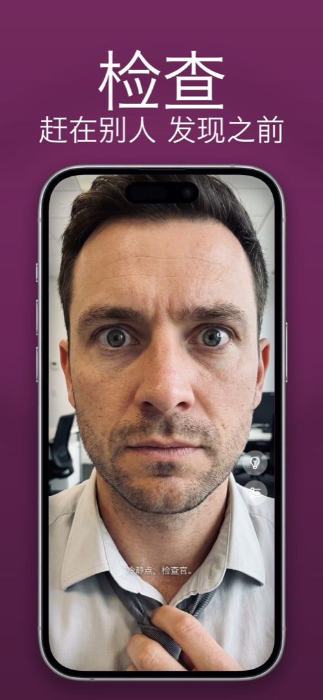

教程
怎么把 iPhone 当镜子用
你在车里、在公司卫生间排队、在餐厅的餐桌前，手边唯一能反光的东西就是手机。好消息是：iPhone 完全可以当一面好用的镜子——只要你知道该用三种方法里的哪一种。
方法一：黑屏反光
锁定 iPhone，把黑色的玻璃朝向自己的脸，你会看到一个模糊的倒影。应急可以，但又暗又没对比度，除非房间很亮而你身后的背景很暗，否则基本没用。只能算应急方案。
方法二：相机 App 的前置摄像头
打开相机，切到自拍镜头，你就能实时看到自己的脸。大多数人都这么做，看个两秒钟没问题。但当你真的想把它当镜子用时，问题就来了：
- 快门正好在拇指落下的位置，你会不停地误拍（然后相册里塞满不好看的大特写）。
- 预览画面上堆着模式标签、变焦转盘和闪光灯开关。
- 亮度停在原来的位置——通常暗得看不清细节。
- 前面没有补光灯。「视网膜闪光」只在你按下快门的一瞬间亮一下。
- 取决于你的设置，你看到的画面和保存的画面可能镜像方向不同，让人困惑（原因见为什么前置摄像头会翻转你的脸）。
方法三：专门的镜子 App
真正的镜子 App 用的也是同一个前置摄像头，但它的行为像镜子而不是相机。好用的 App 和噱头 App 的区别在于：
- 边到边的全屏画面，没有会误触的快门。
- 始终是镜像，和玻璃镜完全一样——举起右手，右边的手就举起来。
- 一打开就是最高亮度。
- 环形补光——屏幕边缘发光，即使在黑暗的车里也能照亮你的脸。
- 用来看眉毛、牙齿和隐形眼镜的放大功能。
- 什么都不保存——没有照片、没有视频、没有人脸数据离开手机。
顺便澄清一点，因为搜索引擎经常把两者混在一起：这和屏幕镜像毫无关系。那是控制中心里把 iPhone 投到电视上的功能。镜子 App 就是一面镜子。
在 Mirrorly 里怎么做
Mirrorly 就是完全按照这份清单做出来的。整个流程如下：
- 从 App Store 下载 Mirrorly 并打开。前置摄像头立即启动——没有菜单，不用注册。屏幕亮度自动调到最高。
- 像拿随身镜一样把手机举到一臂远。你看到的是和真正玻璃镜一样的镜像。
- 房间暗就点一下灯泡按钮。屏幕边缘变成环形补光灯。
- 双指捏合或拖动缩放滑块，凑近看牙齿、眉毛或隐形眼镜。
- 看完了？直接关掉 App。没有拍照、录像或上传任何东西。

Mirrorly 即将登陆 App Store。
iPhone 全屏镜子，带环形补光、缩放和最高亮度。免费检查三次，之后一次性购买——没有订阅，不保存照片，无需账号，没有广告。
即将登陆 App Store下载 Mirrorly